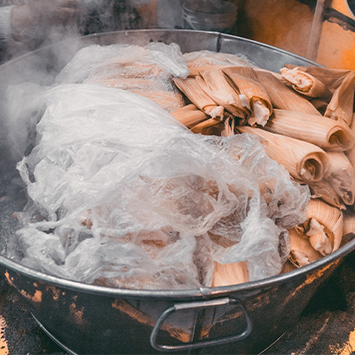
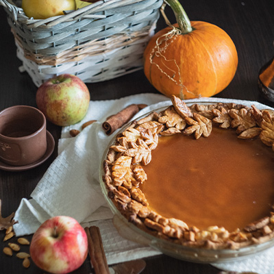
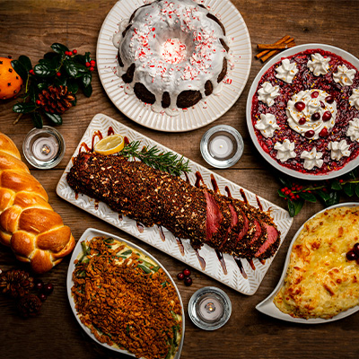
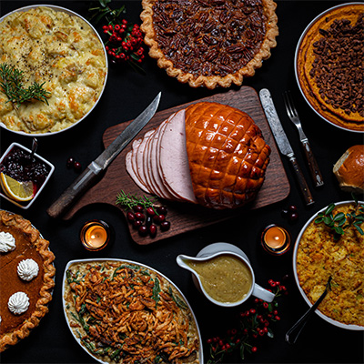
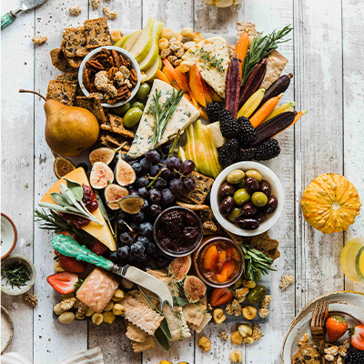
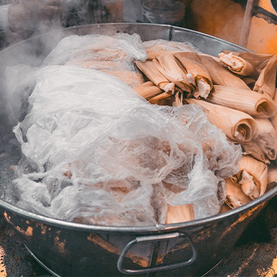
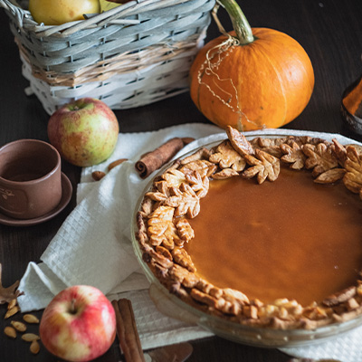
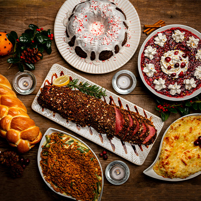
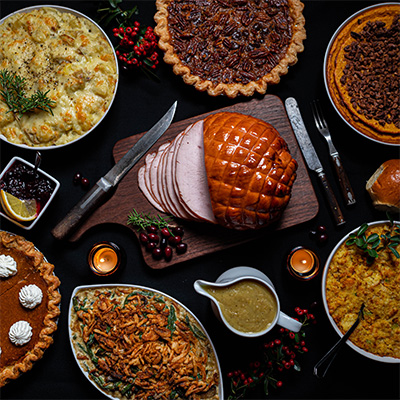
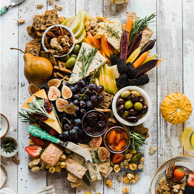

At The Moody Foodie, we embrace the idea that our moods and food are deeply intertwined and founded by a group of
culinary enthusiasts who believe in the power of a good meal to turn any day around. Our platform is more than
just a recipe site—it's a celebration of the emotional journey food takes us on. Food is not just about taste;
it's about feelings, memories, and the magic of the moment. Whether you’re in need of comfort, a burst of energy,
a touch of nostalgia, or a spark of joy, The Moody Foodie is your go-to culinary companion. Our mission is to
provide you with the perfect recipe for every mood, occasion, and craving.
Personalized Cooking Experience:
At The Moody Foodie, every dish tells a story, and every flavor sparks an emotion. We invite you to dive into
this sensorial adventure, exploring recipes that do more than satisfy hunger—they resonate with your soul. Whether
you're looking for comfort food on a gloomy day, a refreshing summer cocktail, or a festive feast to lift the
spirits, The Moody Foodie is here to guide you through.
-The Moody Foodie Team 😋
 










Prep Time:
Ground Turkey Prep: 10 minutes (chopping and sautéing)
Guacamole Prep: 10 minutes
Pico de Gallo Prep: 10 minutes
Assembling Nachos: 5 minutes
Cooking Time:
Cooking Ground Turkey: 10 minutes
Baking Nachos: 10 minutes
Total Cooking Time: Approximately 20 minutes
Overall Time
Total Time (Prep + Cooking): Approximately 55 minutes

Prep Time: 30 minutes
Cook Time: 30 minutes
Overall Time
Total Time (Prep + Cooking): Approximately 1 hour
1. Cook the Sushi Rice:
Rinse the rice under cold water until the water runs clear.
Cook the rice in a rice cooker or pot with 3 cups of water.
Once cooked, let it sit for about 10 minutes.
Gently fold in the rice vinegar, sugar, and salt.
2. Prepare the Ingredients:
Slice the salmon, cream cheese, cucumber, and avocado.
Chop the green onions.
Mix the ingredients for the ponzu sauce in a small bowl.
3. Assemble the Sushi Rolls:
Place a sheet of nori on the bamboo mat.
Spread a thin layer of rice over the nori, leaving about an inch at the top.
Lay salmon slices, cream cheese strips, cucumber, and avocado on the rice.
Using the bamboo mat, roll the sushi tightly from the bottom.
4. Top the Rolls:
Place additional salmon slices on top of each roll.
Use the bamboo mat to gently shape the roll and press the toppings in place.
5. Cut and Serve:
Using a sharp, wet knife - cut the sushi roll into bite-sized pieces.
Place the sushi on a plate and sprinkle with green onions.
Drizzle with ponzu sauce before serving.

Prep Time: 5 minutes
Cook Time:25 minutes
Total Time:30 minutes

Preparation Time: 15 minutes
Cook Time: 20 minutes
Total Time: 35 minutes
The Moody Foodie Recipe Book is a tool that allows you to effortlessly explore a vast array of recipes. The Moody Foodie provides you access to a diverse collection of dishes, ensuring you find the perfect recipe to match your mood, occasion, or dietary preference.
Our interactive shopping list is a personalized tool designed to make your recipe exploration and cooking process as seamless as possible. As you browse through our mood-based menus and select recipes, you can conveniently add all the necessary ingredients to your custom shopping list with just a click. You can also print the list before you head out to the grocery store.